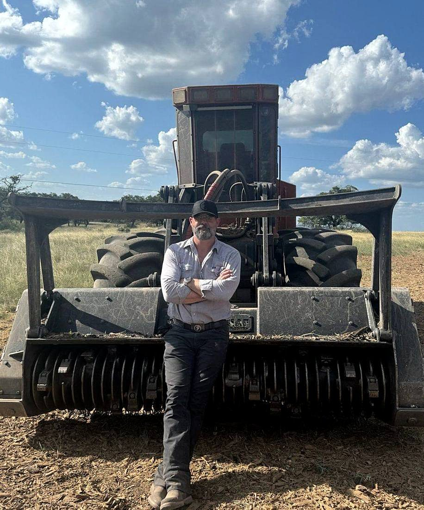

Who We Serve
Serving Spring Branch, Bulverde, New Braunfels, Canyon Lake, Boerne, San Antonio, San Marcos, the Texas Hill Country, and clients across Central Texas.
Developers move on timelines, and access and clear sight lines come first. 9 Arrow partners with land developers across Central Texas to take raw, overgrown tracts to shovel-ready — efficiently, accurately, and on schedule.
We open access first, clear to your surveyor's exact lines, build the roads, and shape the pads — so your grading, utility, and construction crews step onto a site that's ready. The 9 Arrow finish means predictable results and no rework delays.
Developers exclusively use 9 Arrow for their Texas projects because we keep up with overwhelming volume and deliver quality nobody else rivals. You get one trusted operator, not five vendors.

FAQs
9 Arrow Land Service partners with developers across Central Texas — mass forestry mulching and land clearing, survey-line clearing, right-of-way, roads and entrances, and pad sites. One operator who keeps up with your volume.
It's priced by how many hours an area takes — hourly, daily, by the acre, or lump sum. With reasonable density we clear one to three acres per day. You'll get a clear number after a discovery call or site visit.
Yes. We load your licensed surveyor's files onto our machines with Trimble receivers and clear boundaries, easements, and lot lines to within a thousandth of a square foot.
We do — entrances, culverts, creek crossings, graded road base, and building/equipment pads, so the site is truly shovel-ready.
One to three acres per day under reasonable density, and we scale to your schedule for multi-phase projects.
It does not get better.
Tell us about your land and your timeline — you'll know the cost before we start.
Request an Estimate